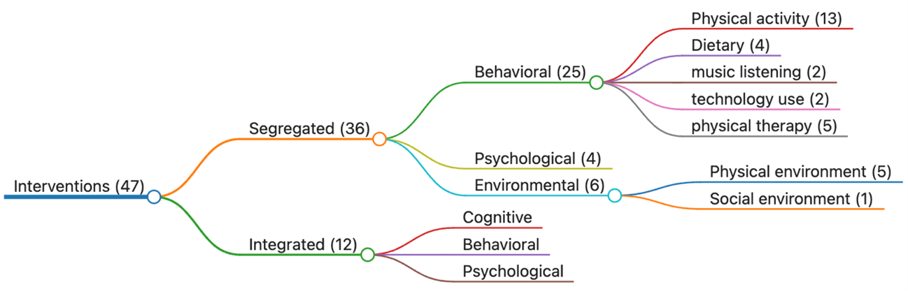

联合共建：银湾研究院、粤港澳大湾区研究院
电话：+86 13538048576地址：广东省深圳市福田区园岭五街8号


2022年，我中心受日本国立公共卫生研究院委托，完成《面向公众及睡眠问题人群的沟通与教育工具开发：睡眠质量改善干预措施综述》专题政策研究报告。该研究系统整合了2012年至2022年间发表的47项随机对照试验与系统综述，是首项覆盖全年龄段成人、跨越行为干预至环境设计的全谱系睡眠改善循证评估，为日本推进「健康日本21」睡眠健康对策提供了国际基准证据与本土化政策工具包。
一、研究框架与核心发现
研究依据干预类型将现有措施系统划分为「行为干预」「心理干预」「环境干预」「整合干预」四大类别，并按年龄亚组（青年人、高齢者、成人一般人群）分别呈现证据图谱。核心发现如下：
（一）行为干预：身体活动、膳食补充、音乐聆听、物理疗法各有循证支撑
身体活动：针对高齢者的证据最为充分。中等强度运动（每周3次、持续12周至6个月）对睡眠质量改善效果最显著；八段锦、太极、银发瑜伽等单一运动类型及组合运动均显示积极效果。功能性训练改善健康高齢者的情绪、抑郁与睡眠；Xbox Kinect体感运动干预亦获阳性结果。值得注意的是，急性晚间高强度运动若安排在睡前2-4小时进行，不会干扰睡眠，但睡前0.5-4小时运动则会减少快速眼动睡眠。针对机构入住高齢者，社会激活与身体动员相结合的干预方案显著提升主观睡眠质量。
膳食与补充剂：日本本土研究证实，裸藻（Euglena）摄入通过调节自主神经系统平衡，改善20-64岁成人的心理状态与睡眠质量。RLX2™（含α-s1-酪蛋白胰蛋白酶水解物与L-茶氨酸）使工作人群总睡眠时间延长45分钟，睡眠潜伏期、睡眠效率、日间功能障碍等指标均显著改善。然而，系统综述显示近半数营养干预研究样本量小、仅纳入健康睡眠者、膳食控制有限，证据强度有待提升。
音乐聆听：镇静音乐延长长睡眠潜伏期青年的深睡眠时长；55岁以上高齢者连续6周聆听每分钟60-80拍、无歌词的器乐镇静音乐，睡眠质量显著提升。
物理疗法：日本研究证实，眼周皮肤加温通过促进末梢散热、模拟生理性入睡前状态，加速睡眠启动并增加深睡眠。足浴（40℃水、每日30分钟）对基线睡眠质量较差的高齢者效果更优，建议以「干预2周、暂停1周、循环进行」模式维持长期效益。耳穴按压真实穴位组在干预结束及1个月随访时，睡眠质量与心理困扰改善均显著优于假穴位对照组。
技术使用管理：针对大学生群体，融入技术边界管理内容的睡眠教育程序（STEPS-TECH）在22分钟自动化演示后，干预组周末总睡眠时间增加、夜间觉醒次数减少。韩国研究显示，睡前使用蓝光智能手机与睡意显著下降相关，提示蓝光过滤技术的潜在干预价值。
（二）心理干预：正念减压与感恩日记效果明确
8周正念减压课程（MBSR）在高齢者及中年人群中均显示睡眠质量改善效应。感恩日记干预（每周3次、记录对人与事的感激）亦被证实有益于睡眠健康。针对慢性梦魇的元分析系统梳理了意象预演疗法、暴露与意象重写疗法等心理干预路径。
（三）环境干预：物理环境与社会环境的双重路径
物理环境：气流提升至0.8m/s可抵消30℃高温对睡眠的干扰；背部与头部局部体表冷却可在32℃热环境中有效维持睡眠质量。芳香疗法的元分析显示其对住院患者及高齢者效应量大，薰衣草精油最为常用，干预频次≤12次、时长≤4周时效果最优。射频电磁场对高齢女性的睡眠促进作用强于男性；去蓝光光谱照明显著抑制褪黑素抑制效应，但对睡眠时长与质量的直接改善未达统计显著。
社会环境：工作场所干预通过提升员工对工作日程的控制感、增强上级与同事支持，间接改善夜间睡眠与日间活力。该干预包含双模块设计：员工与管理者的弹性工作制转型工作坊，以及面向管理层的家庭支持性督导行为训练。考虑到日本职场压力是睡眠问题的主要风险因素，此类社会环境干预在本土化应用时需突破企业自主性壁垒。
（四）整合干预：认知行为疗法已成为循证基石
认知行为疗法（CBT-I）包含刺激控制、睡眠限制、睡眠卫生教育、放松训练、认知重建五大核心组件，被美国睡眠医学会推荐为失眠治疗一线方案。本综述纳入的多项RCT证实，CBT-I在大学生、中年成人及高齢者中均具稳定有效性。移动健康应用（如Balance: Meditation & Sleep）将教育资源、目标设定、自我监测与反馈策略整合为12周个性化支持方案，展现数字化交付潜力。冥想运动干预（太极、瑜伽、气功）整合身体活动与冥想元素，对老年睡眠 complaints 呈现中等效应量。
二、政策转化与工具开发建议
基于证据图谱，研究团队向委托方提交以下核心政策建议与工具开发指引：
（一）以认知行为疗法为基石的睡眠健康支持体系
建议将CBT-I五大核心技术组件本土化、模块化，开发面向保健指导师、地域包括支援中心职员的标准化培训课程；在国民健康保险诊疗数据中建立失眠风险预测模型，对高危人群推送数字化CBT-I程序；借鉴Suzuki等（2008）开发的日本职场人群网络自助干预经验，构建「职场—社区—家庭」三级睡眠健康支持网络。
（二）针对高齢者的多模态非药物干预整合
建议在介护预防事业中系统整合足浴、耳穴按压、镇静音乐、太极/瑜伽等循证干预，开发「高齢者睡眠改善工具箱」；将眼周皮肤加温技术转化为可穿戴设备原型，验证其在特别养护老人院的实效性；在后期高齢者体检问询中引入PSQI简版筛查，建立睡眠问题分层管理流程。
（三）青年及在职人群的数字干预与环境再造
建议在大学健康教育必修模块中嵌入STEPS-TECH等技术边界管理内容，开发日文版睡眠卫生教育应用程序；推动电子产品厂商在智能手机、平板设备中预装蓝光过滤功能，并开展公众认知倡导；参照美国工作家庭健康网络工具箱，在先进企业试点职场社会环境干预，积累日本本土实施证据。
三、证据空白与未来研究优先课题
本研究系统识别出以下关键证据空白，已被委托方纳入次期睡眠健康对策推进计划的证据整备清单：
（1）日本本土睡眠干预研究严重匮乏——本综述仅纳入2项日本研究，亟需构建日本人群睡眠障碍流行病学基线与干预效果本土参数；
（2）膳食营养干预的长期效果与剂量效应关系有待高质量RCT验证；
（3）物理环境干预（电磁场、光谱调谐）的临床转化路径尚不清晰；
（4）职场社会环境干预的实施科学障碍与促进因素有待质性研究解析；
（5）整合干预中各活性组分的贡献度析因设计研究尚付阙如。
本研究是银湾研究院「行为健康与政策转化」系列研究的核心组成。目前，研究团队正基于本报告的证据图谱，受託参与日本国立公共卫生研究院「职场睡眠健康促进实施科学研究」项目，并联合香港中文大学那打素护理学院开展粤港澳大湾区高齢者非药物睡眠干预的跨文化比较研究。我们期待与更多关注睡眠健康、行为医学与数字健康的政府机构、学术团体及产业伙伴合作，共同推动循证睡眠干预从学术文献走向社区、家庭与 workplace。
如您对本研究的证据整合方法、干预工具包或定制化睡眠健康政策评估服务感兴趣，欢迎与我们联系：contact@greybay.org。
